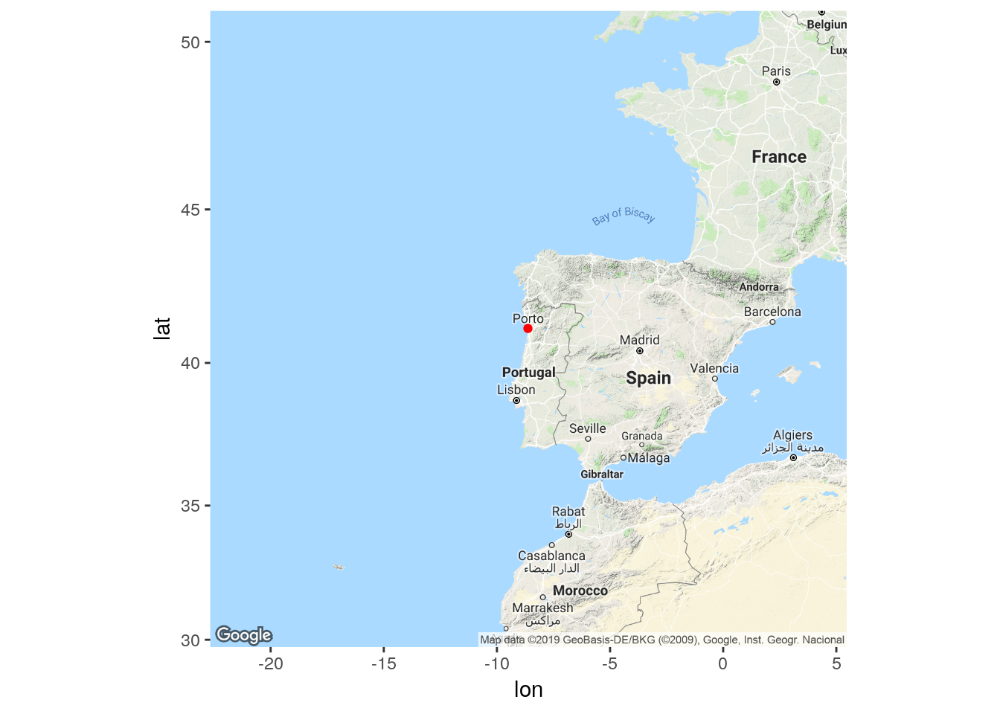
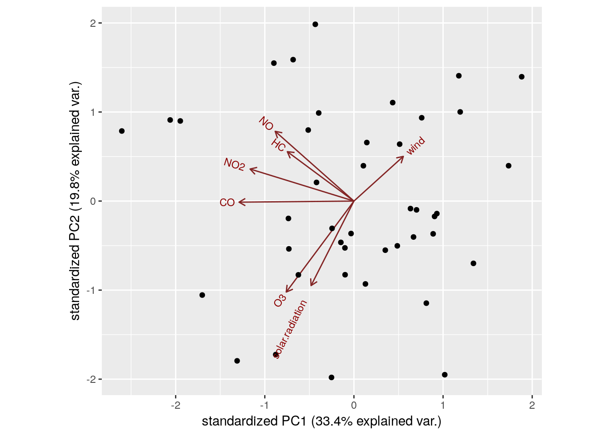

Chapter 25 Principal Components and Factor Analysis
Packages for this chapter:
## Loading required package: ggplot2## Loading required package: plyr## Loading required package: scales## Loading required package: grid## ── Attaching packages ────────────────────────────────── tidyverse 1.2.1 ──## ✔ tibble 1.4.2 ✔ purrr 0.2.5
## ✔ tidyr 0.8.1 ✔ dplyr 0.7.8
## ✔ readr 1.1.1 ✔ stringr 1.3.1
## ✔ tibble 1.4.2 ✔ forcats 0.3.0## ── Conflicts ───────────────────────────────────── tidyverse_conflicts() ──
## ✖ dplyr::arrange() masks plyr::arrange()
## ✖ readr::col_factor() masks scales::col_factor()
## ✖ purrr::compact() masks plyr::compact()
## ✖ dplyr::count() masks plyr::count()
## ✖ purrr::discard() masks scales::discard()
## ✖ dplyr::failwith() masks plyr::failwith()
## ✖ dplyr::filter() masks stats::filter()
## ✖ dplyr::id() masks plyr::id()
## ✖ dplyr::lag() masks stats::lag()
## ✖ dplyr::mutate() masks plyr::mutate()
## ✖ dplyr::rename() masks plyr::rename()
## ✖ dplyr::summarise() masks plyr::summarise()
## ✖ dplyr::summarize() masks plyr::summarize()25.1 The weather, somewhere
The data in link is of the weather in a certain location: daily weather records for 2014. The variables are:
day of the year (1 through 365)
day of the month
number of the month
season
low temperature (for the day)
high temperature
average temperature
time of the low temperature
time of the high temperature
rainfall (mm)
average wind speed
wind gust (highest wind speed)
time of the wind gust
wind direction
- Read in the data, and create a data frame containing only the temperature variables, the rainfall and the wind speed variables (the ones that are actual numbers, not times or text). Display the first few lines of your data frame.
Solution
I like dplyr (as you know). Or you could just pick out
the columns by number:
my_url="http://www.utsc.utoronto.ca/~butler/d29/weather_2014.csv"
weather.0=read_csv(my_url)
weather.0## # A tibble: 365 x 14
## day.count day month season l.temp h.temp ave.temp l.temp.time
## <int> <int> <int> <chr> <dbl> <dbl> <dbl> <time>
## 1 1 1 1 Winter 12.7 14 13.4 01:25
## 2 2 2 1 Winter 11.3 14.7 13.5 07:30
## 3 3 3 1 Winter 12.6 14.7 13.6 21:00
## 4 4 4 1 Winter 7.7 13.9 11.3 10:35
## 5 5 5 1 Winter 8.8 14.6 13 01:40
## 6 6 6 1 Winter 11.8 14.4 13.1 19:35
## 7 7 7 1 Winter 11.4 14.8 13.5 07:25
## 8 8 8 1 Winter 12.4 15.6 14.1 23:50
## 9 9 9 1 Winter 9.2 18.4 12.9 07:10
## 10 10 10 1 Winter 8.3 14.8 11 07:55
## # ... with 355 more rows, and 6 more variables: h.temp.time <time>,
## # rain <dbl>, ave.wind <dbl>, gust.wind <dbl>, gust.wind.time <time>,
## # dir.wind <chr>There are lots of columns, of which we only want a few:
## # A tibble: 365 x 6
## l.temp h.temp ave.temp rain ave.wind gust.wind
## <dbl> <dbl> <dbl> <dbl> <dbl> <dbl>
## 1 12.7 14 13.4 32 11.4 53.1
## 2 11.3 14.7 13.5 64.8 5.6 41.8
## 3 12.6 14.7 13.6 12.7 4.3 38.6
## 4 7.7 13.9 11.3 20.1 10.3 66
## 5 8.8 14.6 13 9.4 11.6 51.5
## 6 11.8 14.4 13.1 38.9 9.9 57.9
## 7 11.4 14.8 13.5 2 6.6 38.6
## 8 12.4 15.6 14.1 1.5 5.9 33.8
## 9 9.2 18.4 12.9 0 0.2 16.1
## 10 8.3 14.8 11 0 1.4 24.1
## # ... with 355 more rows- Find five-number summaries for each column by running
quantileon all the columns of the data frame (at once, if you can: remember themapstuff?)
Solution
This:
## # A tibble: 5 x 6
## l.temp h.temp ave.temp rain ave.wind gust.wind
## <dbl> <dbl> <dbl> <dbl> <dbl> <dbl>
## 1 3.1 9.8 7.3 0 0 3.2
## 2 9.1 14.4 12 0 2.3 22.5
## 3 12.9 19.1 15.8 0.3 3.5 29
## 4 16.3 23.3 19.3 5.3 5.2 38.6
## 5 22.6 31.5 26.6 74.9 16.6 86.9These are, reading down, the min, Q1, median, Q3, max of each variable. The rain, in particular, is very skewed: the median is near zero, but the maximum is much higher. (Most of the time, you get no rain, but if you get any, you can get a lot.)
- Run a principal components analysis (on the correlation matrix).
Solution
- Obtain a
summaryof your principal components analysis. How many components do you think are worth investigating?
Solution
## Importance of components:
## Comp.1 Comp.2 Comp.3 Comp.4
## Standard deviation 1.7830875 1.4138296 0.74407069 0.38584917
## Proportion of Variance 0.5299001 0.3331524 0.09227353 0.02481326
## Cumulative Proportion 0.5299001 0.8630525 0.95532604 0.98013930
## Comp.5 Comp.6
## Standard deviation 0.33552998 0.081140732
## Proportion of Variance 0.01876339 0.001097303
## Cumulative Proportion 0.99890270 1.000000000The issue is to see where the standard deviations are getting small (after the second component, or perhaps the third one) and to see where the cumulative proportion of variance explained is acceptably high (again, after the second one, 86%, or the third, 95%).
- Make a scree plot. Does this support your conclusion from the previous part?
Solution
ggscreeplot from ggbiplot:

I see elbows at 3 and at 4. Remember you want to be on the mountain for these, not on the scree, so this suggests 2 or 3 components, which is exactly what we got from looking at the standard deviations and cumulative variance explained.
The eigenvalue-greater-than-1 thing (that is, the `standard deviation'' in thesummary` being greater than 1)
says 2 components, rather than 3.
- Obtain the component loadings. How do the first three components depend on the original variables? (That is, what kind of values for the original variables would make the component scores large or small?)
Solution
##
## Loadings:
## Comp.1 Comp.2 Comp.3 Comp.4 Comp.5 Comp.6
## l.temp 0.465 0.348 0.542 0.470 0.379
## h.temp 0.510 0.231 -0.576 -0.381 0.458
## ave.temp 0.502 0.311 -0.804
## rain -0.296 0.397 0.853 -0.163
## ave.wind -0.253 0.560 -0.463 0.357 -0.529
## gust.wind -0.347 0.507 -0.230 -0.492 0.572
##
## Comp.1 Comp.2 Comp.3 Comp.4 Comp.5 Comp.6
## SS loadings 1.000 1.000 1.000 1.000 1.000 1.000
## Proportion Var 0.167 0.167 0.167 0.167 0.167 0.167
## Cumulative Var 0.167 0.333 0.500 0.667 0.833 1.000This component loads mainly (and negatively) on the temperature variables, so when temperature is high, component 1 is low. You could also say that it loads positively on the other variables, in which case component 1 is high if the temperature variables are low and the rain and wind variables are high.
This one loads most heavily, negatively, on wind: when wind is high, component 2 is low. Again, you can make the judgement call that the other variables also feature in component 2, so that when everything is large, component 2 is small and vice versa.
This one is a bit clearer. The blank loadings are close to 0, and can be ignored. The main thing in component 3 is rain: when rainfall is large, component 3 is large. Or, if you like, it is large (positive) when rainfall is large and wind is small.
The interpretation here is kind of muffled, because each component has
bits of everything. One of the advantages of factor analysis that we
see in class later is that
you can do a “rotation” so that each variable (to a greater extent)
is either in a factor or out of it. Such a varimax rotation
is the default for factanal, which I presume I now have to
show you (so this is looking ahead):
##
## Loadings:
## Factor1 Factor2 Factor3
## l.temp 0.964 -0.230
## h.temp 0.939 -0.203 0.267
## ave.temp 0.992 -0.101
## rain -0.147 0.604
## ave.wind 0.864
## gust.wind -0.144 0.984
##
## Factor1 Factor2 Factor3
## SS loadings 2.839 2.131 0.140
## Proportion Var 0.473 0.355 0.023
## Cumulative Var 0.473 0.828 0.852These are a lot less ambiguous: factor 1 is temperature, factor 2 is rain and wind, and factor 3 is large (positive) if the high temperature is high or the low temperature is low: that is, if the high temperature was especially high relative to the low temperature (or, said differently, if the temperature range was high).
These factors are rather pleasantly interpretable.
ggbiplot mysteriously doesn’t handle factor analyses, so we
have to go back to the base-graphics version, which goes a bit like this:

Now you see that the factors are aligned with the axes, and it’s very clear what the factors “represent”. (You don’t see much else, in all honesty, but you see at least this much.)
- Obtain the principal component scores, for as many components as you think are reasonable, and display the first 20 of them for each component alongside the other variables in your data frame.
Solution
Something like this. I begin by turning the component scores (which are a matrix) into a data frame, and selecting the ones I want (the first three):
## # A tibble: 365 x 9
## Comp.1 Comp.2 Comp.3 l.temp h.temp ave.temp rain ave.wind gust.wind
## <dbl> <dbl> <dbl> <dbl> <dbl> <dbl> <dbl> <dbl> <dbl>
## 1 -2.84 3.13 -0.00402 12.7 14 13.4 32 11.4 53.1
## 2 -2.79 2.31 3.64 11.3 14.7 13.5 64.8 5.6 41.8
## 3 -1.11 0.255 0.263 12.6 14.7 13.6 12.7 4.3 38.6
## 4 -3.62 2.47 -0.992 7.7 13.9 11.3 20.1 10.3 66
## 5 -2.67 2.03 -1.68 8.8 14.6 13 9.4 11.6 51.5
## 6 -3.09 3.14 0.664 11.8 14.4 13.1 38.9 9.9 57.9
## 7 -1.22 0.328 -0.958 11.4 14.8 13.5 2 6.6 38.6
## 8 -0.734 0.102 -0.743 12.4 15.6 14.1 1.5 5.9 33.8
## 9 0.210 -2.26 0.534 9.2 18.4 12.9 0 0.2 16.1
## 10 -0.825 -2.00 0.109 8.3 14.8 11 0 1.4 24.1
## 11 -1.01 -2.72 0.294 5.8 14.8 9.5 0.3 1.1 16.1
## 12 -1.68 0.0710 -0.0803 9.4 15.2 12.1 10.7 4.7 41.8
## 13 -2.12 -0.822 0.653 7.3 12.9 10.2 15.7 3.1 35.4
## 14 -1.34 0.00249 -0.169 11.4 13.9 12.8 8.1 4.7 38.6
## 15 -2.52 0.929 0.955 9.4 13.1 12 29 5.9 43.5
## 16 -2.38 0.200 -0.669 9 12.2 10.8 6.9 5.4 49.9
## 17 -3.18 0.626 0.431 7.7 11.4 9.3 25.4 7.2 41.8
## 18 -1.95 -1.82 1.28 7.5 10.9 9 17 1.4 24.1
## 19 -2.13 -1.60 -0.293 6.4 11.4 8.7 2.5 3.3 32.2
## 20 -1.29 -2.62 0.448 6.9 12.2 9.2 2.8 1.1 17.7
## # ... with 345 more rowsI just did the first three scores.
- Find a day that scores high on component 1, and explain briefly why it came out that way (by looking at the measured variables).
Solution
Day 4 has the highest component 1 score. This is one of the cooler days. Also, there is a largish amount of rain and wind. So low temperature, high rain and wind. The days at the bottom of my list were cooler than day 4, but they had less rain and less wind.
- Find a day that scores low on component 2, and explain briefly why it came out low.
Solution
Day 6 (or day 1). These are days when the wind speed (average or gust) is on the high side. These days win over day 4 because their temperature was also higher.
- Find a day that scores high on component 3, and explain briefly why it came out high.
Solution
Day 2. Component 3 was mainly rain, so it is not surprising that the rainfall is the highest on this day.
- Make a biplot of these data, labelling the days by the day count (from 1 to 365). You may have to get the day count from the original data frame that you read in from the file. You can shrink the day numbers to make them overwrite each other (a bit) less.
Solution
ggbiplot. I did some digging in the help file to figure
out how to label the points by a variable and how to control the
size of the labels, and I also went digging in the data frame
that I read in from the file to get the count of the day in the
year, which was called day.count:

I think the label text is small enough, though you could make it smaller. I’ll be asking you to look at some extreme points in a moment, so those are the only ones you’ll need to be able to disentangle.
The variables divide into two groups: the temperature ones, that point to about 8 o’clock, and the wind and rain ones, that point to about 5 o’clock. These are not straight up or down or across, so they all feature in both components: component 1 is mostly temperature, but has a bit of wind/rain in it, while component 2 is mostly wind/rain with a bit of temperature in it. You might be wondering whether things couldn’t be rotated so that, say, the temperature variables go across and the rain/wind ones go down, which means you’d have a temperature component and a rain/wind component. This is what factor analysis does, and I think I did that earlier (and this is what we found).
- Looking at your biplot, what do you think was remarkable
about the weather on day 37? Day 211? Confirm your guesses by
looking at the appropriate rows of your data frame (and comparing
with your
summaryfrom earlier).
Solution
Day 37 is at the bottom right of the plot, at the pointy end of the arrows for rain, wind gust and average wind. This suggests a rainy, windy day:
## # A tibble: 1 x 6
## l.temp h.temp ave.temp rain ave.wind gust.wind
## <dbl> <dbl> <dbl> <dbl> <dbl> <dbl>
## 1 9.3 15.3 12.5 43.4 16.6 74Those are high numbers for both rain and wind (the highest for average wind and above the third quartile otherwise), but the temperatures are unremarkable.
Day 211 is towards the pointy end of the arrows for temperature, so this is a hot day:
## # A tibble: 1 x 6
## l.temp h.temp ave.temp rain ave.wind gust.wind
## <dbl> <dbl> <dbl> <dbl> <dbl> <dbl>
## 1 22.6 31.5 26.6 0 4.5 33.8This is actually the hottest day of the entire year: day 211 is highest on all three temperatures, while the wind speeds are right around average (and no rain is not completely surprising).
I can do a couple more. Points away from the pointy end of the arrows are low on the variables in question, for example day 265:
## # A tibble: 1 x 6
## l.temp h.temp ave.temp rain ave.wind gust.wind
## <dbl> <dbl> <dbl> <dbl> <dbl> <dbl>
## 1 16.6 20.3 18.1 6.3 0 3.2This is not really low rain, but it is definitely low wind. What about day 47?
## # A tibble: 1 x 6
## l.temp h.temp ave.temp rain ave.wind gust.wind
## <dbl> <dbl> <dbl> <dbl> <dbl> <dbl>
## 1 3.1 11.8 7.3 0.8 2 24.1This is predominantly low on temperature. In fact, it is kind of low on wind and rain too. If you ignore the wind gust, anyway. This makes sense, because not only is it at the “wrong” end of the temperature arrows, it is kind of at the wrong end of the wind/rain arrows as well.
Having done these by percentile ranks in one of the other questions, let’s see if we can do that here as well:
## # A tibble: 4 x 6
## l.temp h.temp ave.temp rain ave.wind gust.wind
## <dbl> <dbl> <dbl> <dbl> <dbl> <dbl>
## 1 0.264 0.316 0.299 0.973 1 0.997
## 2 1 0.997 1 0 0.654 0.626
## 3 0.783 0.560 0.635 0.761 0 0
## 4 0 0.0275 0 0.582 0.162 0.275These are:
Day 37: highly rainy and windy (and below average, but not remarkably so, on temperature).
Day 211: the highest or near-highest temperature, no rain but unremarkable for wind.
Day 265: Lowest for wind (and above Q3 for low temperature and rain).
Day 47: Lowest or near-lowest temperature.
The advantage to doing it this way is that you don’t need a separate five-number summary for each variable; the percentile ranks give you a comparison with quartiles (or any other percentile of interest to you). In case you are wondering where this is: I was doing a presentation using these data to some Environmental Science grad students, and I had them guess where it was. The temperatures for the whole year are warm-temperate, with a smallish range, and sometimes a lot of rain. This suggests a maritime climate. I gave the additional clues of “western Europe” and “this place’s soccer team plays in blue and white striped shirts”. The temperatures have about the right range low-to-high for Britain, but are too warm. Which suggests going south: perhaps Brittany in France, but actually the west coast of the Iberian peninsula: Porto, in northern Portugal, with the weather blowing in off the Atlantic.
## Google Maps API Terms of Service: https://cloud.google.com/maps-platform/terms/.## Please cite ggmap if you use it: see citation("ggmap") for details.Let’s make a map, but first we “geocode” Porto (and La Coruna, for later). I like to do the lookup of longitude and latitude first, once and for all, since I find the geocoding a bit finicky (it’s actually Google that’s finicky, because sometimes it decides that you’ve done too many lookups and returns you missings). I save the result:
## Source : https://maps.googleapis.com/maps/api/geocode/json?address=Porto%20PT&key=xxx-Mj1-zNBW4GTnXNAYdGQJDNXU## Source : https://maps.googleapis.com/maps/api/geocode/json?address=La%20Coruna%20ES&key=xxx-Mj1-zNBW4GTnXNAYdGQJDNXU## # A tibble: 2 x 3
## place lon lat
## <chr> <dbl> <dbl>
## 1 Porto PT -8.63 41.2
## 2 La Coruna ES -8.41 43.4Then I use these points. I
just want Porto this time (we’ll use the other one in a minute). You
can obtain a map from a place name (just like you can in
maps.google.com, since it’s the same interface), but since we
already have the longitude and latitude, we’ll use them again, to save
Google looking them up again, and possibly saving us from getting an error:
## Source : https://maps.googleapis.com/maps/api/staticmap?center=Porto&zoom=5&size=640x640&scale=2&maptype=terrain&language=en-EN&key=xxx-Mj1-zNBW4GTnXNAYdGQJDNXU## Source : https://maps.googleapis.com/maps/api/geocode/json?address=Porto&key=xxx-Mj1-zNBW4GTnXNAYdGQJDNXU
As a point of technique, I’ve gone further than necessary (as usual). I wanted to mark the point corresponding to Porto. I thought about circling it or drawing an arrow to it, but this way, marking it with a dot, is easiest. There is always a choice, marking places on maps, whether you put a label on the place or not; it depends on the scale of the map (and the size of the place you are labelling) whether it will already appear labelled on the map or not.
The weather in this part of the world tends to come from the southwest. Now you see why Porto gets so much rain! If you know your soccer teams, La Coruna in north-western Spain would have been a good choice too (their team Deportivo also plays in blue and white striped shirts, and the climate is likely to be similar).
I suppose I have to show you that on the map too. First I read in the longitudes and latitudes for both places from the file, and (just for fun) add a column saying which country each one is in. I’m also labelling both places:
places %>% mutate(country=c("Portugal","Spain")) -> places
ggmap(mapp)+
geom_point(data=places,aes(x=lon,y=lat,colour=country)) +
geom_text_repel(data=places, aes(label=place))## Warning in min(x): no non-missing arguments to min; returning Inf## Warning in max(x): no non-missing arguments to max; returning -Inf## Warning in min(x): no non-missing arguments to min; returning Inf## Warning in max(x): no non-missing arguments to max; returning -Inf
Note that this time the colour is inside the aes, so
ggplot will choose different colours to represent the
countries with.
I’m not sure what the warnings are, but they are something to do with plotting the labels.
You might guess that La Coruna (in blue) will have very similar weather to Porto.
25.2 Air pollution
The data in
link are
measurements of air-pollution variables recorded at 12 noon on 42
different days at a location in Los Angeles. The file is in
.csv format, since it came from a spreadsheet. Specifically,
the variables (in suitable units), in the same order as in the data
file, are:
wind speed
solar radiation
carbon monoxide
Nitric oxide (also known as nitrogen monoxide)
Nitrogen dioxide
Ozone
Hydrocarbons
The aim is to describe pollution using fewer than these seven variables.
- Read in the data and demonstrate that you have the right number of rows and columns in your data frame.
Solution
This is a .csv file, so:
## Parsed with column specification:
## cols(
## wind = col_integer(),
## solar.radiation = col_integer(),
## CO = col_integer(),
## NO = col_integer(),
## NO2 = col_integer(),
## O3 = col_integer(),
## HC = col_integer()
## )## # A tibble: 42 x 7
## wind solar.radiation CO NO NO2 O3 HC
## <int> <int> <int> <int> <int> <int> <int>
## 1 8 98 7 2 12 8 2
## 2 7 107 4 3 9 5 3
## 3 7 103 4 3 5 6 3
## 4 10 88 5 2 8 15 4
## 5 6 91 4 2 8 10 3
## 6 8 90 5 2 12 12 4
## 7 9 84 7 4 12 15 5
## 8 5 72 6 4 21 14 4
## 9 7 82 5 1 11 11 3
## 10 8 64 5 2 13 9 4
## # ... with 32 more rowsThere should be 42 rows (for the 42 days), and 7 columns (for the 7 variables), and there are.
- * Obtain a five-number summary for each variable. You can do this in one go for all seven variables.
Solution
Like this:
## # A tibble: 5 x 7
## wind solar.radiation CO NO NO2 O3 HC
## <dbl> <dbl> <dbl> <dbl> <dbl> <dbl> <dbl>
## 1 5 30 2 1 5 2 2
## 2 6 68.2 4 1 8 6 3
## 3 8 76.5 4 2 9.5 8.5 3
## 4 8.75 84.8 5 3 12 11 3
## 5 10 107 7 5 21 25 5using map from purrr. I have to figure out how to
identify which number from the five number summary each of these is,
but in this case you can easily figure it out since the min is the
smallest and the max has to be the biggest in each column.
- Obtain a principal components analysis. Do it on the correlation matrix, since the variables are measured on different scales. You don’t need to look at the results yet.
Solution
This is all rather like the previous question:
- Obtain a scree plot. How many principal components might be worth looking at? Explain briefly. (There might be more than one possibility. If so, discuss them all.)
Solution
ggscreeplot the thing you just obtained, having loaded
package ggbiplot:

There is a technicality here, which is
that ggbiplot, the package, loads plyr, which
contains a lot of the same things as dplyr (the latter is a
cut-down version of the former). If you load dplyr and
then plyr (that is to say, if you load the
tidyverse first and then ggbiplot), you will end up
with trouble, and probably the wrong version of a lot of functions. To
avoid this, load ggbiplot first, and then you’ll be
OK.
Now, finally, we might diverge from the last question. There are actually two elbows on this plot, at 2 and at 4, which means that we should entertain the idea of either 1 or 3 components. I would be inclined to say that the elbow at 2 is still “too high up” the mountain — there is still some more mountain below it.
The points at 3 and 6 components look like elbows too, but they are pointing the wrong way. What you are looking for when you search for elbows are points that are the end of the mountain and the start of the scree. The elbows at 2 (maybe) and 4 (definitely) are this kind of thing, but the elbows at 3 and at 6 are not.
- Look at the
summaryof the principal components object. What light does this shed on the choice of number of components? Explain briefly.
Solution
## Importance of components:
## Comp.1 Comp.2 Comp.3 Comp.4 Comp.5 Comp.6
## Standard deviation 1.5286539 1.1772853 1.0972994 0.8526937 0.80837896 0.73259047
## Proportion of Variance 0.3338261 0.1980001 0.1720094 0.1038695 0.09335379 0.07666983
## Cumulative Proportion 0.3338261 0.5318262 0.7038356 0.8077051 0.90105889 0.97772872
## Comp.7
## Standard deviation 0.39484041
## Proportion of Variance 0.02227128
## Cumulative Proportion 1.00000000The first component only explains 33% of the variability, not very much, but the first three components together explain 70%, which is much more satisfactory. So I would go with 3 components.
There are two things here: finding an elbow, and explaining a sensible fraction of the variability. You could explain more of the variability by taking more components, but if you are not careful you end up explaining seven variables with, um, seven variables.
If you go back and look at the scree plot, you’ll see that the first elbow is really rather high up the mountain, and it’s really the second elbow that is the start of the scree.
If this part doesn’t persuade you that three components is better than one, you need to pick a number of components to use for the rest of the question, and stick to it all the way through.
- * How do each of your preferred number of components depend on the variables that were measured? Explain briefly.
Solution
When this was a hand-in question, there were three marks for it, which was a bit of a giveaway! Off we go:
##
## Loadings:
## Comp.1 Comp.2 Comp.3 Comp.4 Comp.5 Comp.6 Comp.7
## wind 0.237 0.278 0.643 0.173 0.561 0.224 0.241
## solar.radiation -0.206 -0.527 0.224 0.778 -0.156
## CO -0.551 -0.114 0.573 0.110 -0.585
## NO -0.378 0.435 -0.407 0.291 0.450 0.461
## NO2 -0.498 0.200 0.197 -0.745 0.338
## O3 -0.325 -0.567 0.160 -0.508 0.331 0.417
## HC -0.319 0.308 0.541 -0.143 -0.566 0.266 -0.314
##
## Comp.1 Comp.2 Comp.3 Comp.4 Comp.5 Comp.6 Comp.7
## SS loadings 1.000 1.000 1.000 1.000 1.000 1.000 1.000
## Proportion Var 0.143 0.143 0.143 0.143 0.143 0.143 0.143
## Cumulative Var 0.143 0.286 0.429 0.571 0.714 0.857 1.000You’ll have to decide where to draw the line between “zero” and “nonzero”. It doesn’t matter so much where you put the line, so your answers can differ from mine and still be correct.
We need to pick the loadings that are “nonzero”, however we define that, for example:
component 1 depends (negatively) on carbon monoxide and nitrogen dioxide.
component 2 depends (negatively) on solar radiation and ozone and possibly positively on nitric oxide.
component 3 depends (positively) on wind and hydrocarbons.
It is a good idea to translate the variable names (which are abbreviated) back into the long forms.
- Display all the scores on component 1 (just the scores on component 1, not the other scores, and not the other variables in the original data). Which one is the smallest (most negative)?
Solution
If you like handling matrices using square brackets, this will work:
## [1] -0.95292110 -0.04941978 0.53767776 -0.37519620 0.19694099 -1.12344250 -3.15139458
## [8] -3.98104305 -0.15165763 -0.78386476 -0.60402136 -0.22411266 -2.97796885 0.78383262
## [15] 1.38284280 1.02171175 1.35822739 -1.37285633 0.66428044 1.16194178 -0.66259617
## [22] 1.07332913 -0.64183302 1.79880205 -1.34127497 1.42184148 -0.15463266 2.04936530
## [29] 0.16201914 2.87668117 0.96965625 0.22069552 -1.04312150 -0.38484722 2.65231799
## [36] 1.24143314 1.55729177 -2.00338842 -2.60151068 0.74386328 -1.11586529 1.82221699In the more likely event that you don’t, turn it into a data frame first, and then display its first column:
## # A tibble: 42 x 1
## Comp.1
## <dbl>
## 1 -0.953
## 2 -0.0494
## 3 0.538
## 4 -0.375
## 5 0.197
## 6 -1.12
## 7 -3.15
## 8 -3.98
## 9 -0.152
## 10 -0.784
## 11 -0.604
## 12 -0.224
## 13 -2.98
## 14 0.784
## 15 1.38
## 16 1.02
## 17 1.36
## 18 -1.37
## 19 0.664
## 20 1.16
## 21 -0.663
## 22 1.07
## 23 -0.642
## 24 1.80
## 25 -1.34
## 26 1.42
## 27 -0.155
## 28 2.05
## 29 0.162
## 30 2.88
## 31 0.970
## 32 0.221
## 33 -1.04
## 34 -0.385
## 35 2.65
## 36 1.24
## 37 1.56
## 38 -2.00
## 39 -2.60
## 40 0.744
## 41 -1.12
## 42 1.82You’ll need the last step, or else you’ll only get the first ten rows (it’s a tibble-type data frame). Print a number of rows, or this, which is “all of them, no matter how many”.
These will display only the 42 values for the first score, and not anything else. You don’t need to save them in a variable; just displaying the values is enough.
To find the most negative one, you can eyeball the values and see that
the most negative one is \(-3.98\), which is the 8th one. (In the first
output, the first one
on the second row is number 6, as shown by the [6].)
Or you can be lazy like me and get R to do the work for you. This applies to the matrix way. This tells you how small the smallest value is:
## [1] -3.981043only that is not quite what we wanted, since we wanted to know which one it was. This is a common thing to ask, so it has its own function:
## [1] 8The 8th one.
If you did this the tidyverse way:
## # A tibble: 1 x 2
## Comp.1 row
## <dbl> <int>
## 1 -3.98 8I did two more steps: created a column of row numbers, so I’d know
which one was the smallest, then I displayed all rows for which
Comp.1 was equal to the smallest one (this displays all of
the “minimum” rows if there are more than one).
tidyverse tools aren’t always better, so it’s worth also
knowing about the square-bracket way to get rows and columns, as well
as min and max and which.min and
which.max. Having extra choices makes you a better data
analyst.
- Display the original data for the observation with the most negative score on component 1. What is it about the data for this observation that makes the component 1 score come out so negative? (Refer back to part (here) as you need.)
Solution
## # A tibble: 1 x 7
## wind solar.radiation CO NO NO2 O3 HC
## <int> <int> <int> <int> <int> <int> <int>
## 1 5 72 6 4 21 14 4Or, you can display the rows of the original data frame that go with the minimum score on component 1 like this:
Or, the square-bracket way (the 8th row and all the columns):
## # A tibble: 1 x 7
## wind solar.radiation CO NO NO2 O3 HC
## <int> <int> <int> <int> <int> <int> <int>
## 1 5 72 6 4 21 14 4Let me also display the five-number summary again (copying my code from part (here)):
## # A tibble: 5 x 7
## wind solar.radiation CO NO NO2 O3 HC
## <dbl> <dbl> <dbl> <dbl> <dbl> <dbl> <dbl>
## 1 5 30 2 1 5 2 2
## 2 6 68.2 4 1 8 6 3
## 3 8 76.5 4 2 9.5 8.5 3
## 4 8.75 84.8 5 3 12 11 3
## 5 10 107 7 5 21 25 5Looking back to part (here), component 1 depended negatively mainly on carbon monoxide and nitrogen dioxide, so its score will be very negative if those two variables are high. Are they? Well, carbon monoxide on this day was 6, which is above the 3rd quartile (and thus high), and nitrogen dioxide was 21, which was the highest of all. So it is not at all surprising that this day would have the most negative score on component 1.
I think, one point for displaying the 8th row (or whichever row you got), and two points for some kind of sensible explanation for why it was so negative, based on what you thought component 1 depended on. For your reference (and maybe the grader’s aid), here are all the variables:
In all but one of these, day 8 is high when the loading on component 1 is negative and low when the loading is positive. The only exception is solar radiation, which has the closest loading to zero in the table of loadings. So, whichever variables you thought were important in component 1, you ought to come to the same conclusion about why day 8 came out so negative: “day 8 is high on the variables that load negatively on component 1 (and low on the one that loads positively)”.
That’s all I asked for. I didn’t ask for a biplot, which might also shed some light on this part. But you can certainly produce one if you want. The default is this:

The problem here is that we don’t know which observation is
which. ggbiplot has an option labels for this, only
we don’t have row numbers anywhere in our data frame (I should have
saved the ones I made earlier), so we’re going to have to manufacture
them first:

Day 8 is way over on the left. The things that point in the direction
of observation 8 (NO2, CO and to a lesser extent NO
and HC) are the things that observation 8 is high on. On the
other hand, observation 8 is around the middle of the arrows for
wind, solar.radiation and O3, so that day
is not especially remarkable for those. This is more or less what we
found before.
Contrast that with day 38, which is near the bottom of the picture
(and has a low, very negative, score on component 2). This ought to
have a high value for solar.radiation and O3 and a
low value for wind. Does it?
## # A tibble: 1 x 7
## wind solar.radiation CO NO NO2 O3 HC
## <int> <int> <int> <int> <int> <int> <int>
## 1 5 86 7 2 13 18 2Solar radiation is 86 (above 3rd quartile), ozone is 18 (ditto) and wind is 5 (the lowest). It all matches. What about the score on component 2, which is negative? Component 2 depends on solar radiation and ozone, both negatively, so day 38’s component 2 score should be the negative value that it is.
This business about figuring out whether values on variables are high or low is kind of fiddly, since you have to refer back to the five-number summary to see where the values for a particular observation come. Another way to approach this is to calculate percentile ranks for everything:
## # A tibble: 2 x 7
## wind solar.radiation CO NO NO2 O3 HC
## <dbl> <dbl> <dbl> <dbl> <dbl> <dbl> <dbl>
## 1 0 0.390 0.829 0.878 1 0.829 0.780
## 2 0 0.780 0.902 0.317 0.829 0.927 0This gives percentile ranks for each of the variables for observations 8 and 38. A percentile rank of 0 means it’s the lowest; 0.25 means it’s at the first quartile, 0.5 is at the median, 0.75 is at the third quartile, and 1 is the highest. So this gives a direct interpretation of where the variables’ values stand for an observation.
Observation 8, on the left of the biplot, should be high on NO2, CO, NO, and HC and average on the other things. Looking at the percentile ranks for these variables, these are between 0.78 and 1: that is, observation 8 is higher than the third quartile on all of these. It also happens to be high on O3 (ozone), which is a surprise, but the solar radiation is between Q1 and the median, which is the kind of thing we’d expect.
Observation 38, at the bottom of the biplot, should be high on solar radiation and O3, low on wind, and average on the other things. The first two of those variables are at the 78th and 93rd percentiles, so they are definitely high (higher than Q3). Wind is (jointly) lowest of all, as expected. The other variables are a real mixed bag: some of them, like NO2, are high, and some of them, like HC, are low. The correspondence between high and low, in real data, won’t be perfect, but it should be right more often than not.
Now that I think about it, this percentile rank idea is really the best way to assess whether a variable’s values are high or low, because you only have to look at one thing: you no longer have to compare the values with the five-number summary and jump from one to the other.
The other thing that you see from the biplot is that there are four variables pointing more or less up and to the left, and at right angles to them, three other variables pointing up-and-right or down-and-left. You could imagine rotating those arrows so that the group of 4 point upwards, and the other three point left and right. This is what factor analysis does, so you might imagine that this technique might give a clearer picture of which variables belong in which factor than principal components does.
I would normally put a question on this on the next assignment (and using the same data set would save me having to find another one). But since you aren’t going to be handing in an assignment 10, I can do it here. I’ll obtain two factors first, since we are comparing with the biplot:
##
## Loadings:
## Factor1 Factor2
## wind -0.176 -0.249
## solar.radiation 0.319
## CO 0.797 0.391
## NO 0.692 -0.152
## NO2 0.602 0.152
## O3 0.997
## HC 0.251 0.147
##
## Factor1 Factor2
## SS loadings 1.573 1.379
## Proportion Var 0.225 0.197
## Cumulative Var 0.225 0.422This is almost the same as the biplot, but not quite: factor 1
contains three of the four variables that point up and left (not
HC)), while factor 2 is mainly ozone, with only moderate
loadings for the other things that point up-and-right and
down-and-left on the biplot.
wind, solar.radiation and HC don’t appear
in either of our factors, which also shows up here:
## wind solar.radiation CO NO NO2
## 0.9070224 0.8953343 0.2126417 0.4983564 0.6144170
## O3 HC
## 0.0050000 0.9152467Those variables all have high uniquenesses.
What with the high uniquenesses, and the fact that two factors explain only 42% of the variability, we really ought to look at 3 factors, the same way that we said we should look at 3 components:
##
## Loadings:
## Factor1 Factor2 Factor3
## wind -0.210 -0.334
## solar.radiation 0.318
## CO 0.487 0.318 0.507
## NO 0.238 -0.269 0.931
## NO2 0.989
## O3 0.987 0.124
## HC 0.427 0.103 0.172
##
## Factor1 Factor2 Factor3
## SS loadings 1.472 1.312 1.288
## Proportion Var 0.210 0.187 0.184
## Cumulative Var 0.210 0.398 0.582In case you are wondering, factanal automatically uses the
correlation matrix, and so takes care of variables measured on
different scales without our having to worry about that.
The rotation has only helped somewhat here. Factor 1 is mainly
NO2 with some influence of CO and HC;
factor 2 is mainly ozone (with a bit of solar radiation and ozone),
and factor 3 is mainly NO with a bit of CO.
I think I mentioned most of the variables in there, so the uniquenesses should not be too bad:
## wind solar.radiation CO NO NO2
## 0.8404417 0.8905074 0.4046425 0.0050000 0.0050000
## O3 HC
## 0.0050000 0.7776557Well, not great: wind and solar.radiation still have
high uniquenesses because they are not strongly part of any factors.
## objective
## 0.0229409This is small, if not very small, so there is still some evidence that 3 factors are not enough to describe what’s going on. But with only seven variables, more than three factors wouldn’t offer much insight.
Factor scores:
## Factor1 Factor2 Factor3
## [1,] 0.64483227 -0.23714731 -0.4095760787
## [2,] -0.29528639 -0.85282437 0.6221216025
## [3,] -1.53954750 -0.63065382 1.0036978144
## [4,] -0.72082810 1.02716028 0.2903794654
## [5,] -0.62566042 0.15236460 0.0157874608
## [6,] 0.56381963 0.45673832 -0.1981115475
## [7,] 0.35308177 0.74966402 1.9066403318
## [8,] 3.11868141 0.46639542 1.1179340613
## [9,] 0.35361448 0.41207900 -1.1357198217
## [10,] 0.93101834 -0.08262008 -0.4451462596
## [11,] -0.02563331 -1.33276881 1.4020903954
## [12,] 0.65971434 -0.42017536 -0.4760351969
## [13,] 2.28337048 -0.19717326 1.1434791060
## [14,] 0.35495552 -0.41414845 -0.4011225805
## [15,] -0.54531239 0.26559360 -0.9560798591
## [16,] -0.23970358 0.25514542 -1.0360212611
## [17,] -0.79011924 -0.24518676 -1.0364817494
## [18,] 1.87264046 -1.11148725 -0.0004041084
## [19,] 1.06928379 -1.31221874 -0.8382921399
## [20,] -0.29801227 -0.86170329 0.6136253453
## [21,] 1.26144133 -1.09049517 0.1594811049
## [22,] -0.84809286 -0.53889546 -0.1280667643
## [23,] 0.88733996 0.26558264 -0.3399487887
## [24,] -1.46207376 -1.33900266 0.7812972723
## [25,] -0.19623120 2.52560167 -0.3904333048
## [26,] -0.85133568 -0.54163027 -0.1314908719
## [27,] 0.27120014 0.29044349 -0.1739760356
## [28,] -0.85741878 0.27344972 -0.8812750767
## [29,] -0.35828257 -0.33118837 0.7890318198
## [30,] -0.68989446 -1.12912776 -1.3205724393
## [31,] 0.12748319 -0.28133543 -1.2813443776
## [32,] 0.72149454 -0.13032314 -1.3872590776
## [33,] -0.73521612 -1.25081905 2.5922963036
## [34,] -0.22330198 2.69585963 -0.3409950344
## [35,] -1.14074197 0.11018463 -0.8486366562
## [36,] -0.24347970 0.25622005 -1.0349215520
## [37,] -1.20627665 0.64154702 -0.6799193954
## [38,] 0.74342416 1.50263668 0.0649524380
## [39,] -0.77849233 2.53540613 2.7048237886
## [40,] -0.54388048 -0.54705946 -0.2018835733
## [41,] 0.21480717 0.82109666 0.0015108562
## [42,] -1.21738120 -0.82518472 0.8645643843Since there are 3 columns here, you could plot them in rgl
and rotate it around to see how the days stack up. Unlike principal
components, there is no sense that factor 1 is the most important and
factor 3 the least; because of the rotation, all that we have is that
the three factors together explain 58% of the
variability.
This is unlike principal components because, by design there, the first principal component explains the most variability. That does not happen here, because the (rotated) factors act as a team.
Note that day 8 has the most extreme score on factor 1 again. This is for more or less the same reasons that it had the most extreme score on component 1 before.
25.3 A correlation matrix
Here is a correlation matrix between five variables. This correlation matrix was based on \(n=50\) observations. Save the data into a file.
1.00 0.90 -0.40 0.28 -0.05
0.90 1.00 -0.60 0.43 -0.20
-0.40 -0.60 1.00 -0.80 0.40
0.28 0.43 -0.80 1.00 -0.70
-0.05 -0.20 0.40 -0.70 1.00
- Read in the data, using
col_names=F(why?). Check that you have five variables with names invented by R.
Solution
I saved my data into cov5.txt,
Not to be confused with covfefe. delimited by single spaces, so:
## Parsed with column specification:
## cols(
## X1 = col_double(),
## X2 = col_double(),
## X3 = col_double(),
## X4 = col_double(),
## X5 = col_double()
## )## # A tibble: 5 x 5
## X1 X2 X3 X4 X5
## <dbl> <dbl> <dbl> <dbl> <dbl>
## 1 1 0.9 -0.4 0.28 -0.05
## 2 0.9 1 -0.6 0.43 -0.2
## 3 -0.4 -0.6 1 -0.8 0.4
## 4 0.28 0.43 -0.8 1 -0.7
## 5 -0.05 -0.2 0.4 -0.7 1I needed to say that I have no variable names and I want R
to provide some. As you see, it did: X1 through
X5. You can also supply your own names in this fashion:
my_names=c("first","second","third","fourth","fifth")
corr2=read_delim("cov5.txt"," ",col_names=my_names)## Parsed with column specification:
## cols(
## first = col_double(),
## second = col_double(),
## third = col_double(),
## fourth = col_double(),
## fifth = col_double()
## )## # A tibble: 5 x 5
## first second third fourth fifth
## <dbl> <dbl> <dbl> <dbl> <dbl>
## 1 1 0.9 -0.4 0.28 -0.05
## 2 0.9 1 -0.6 0.43 -0.2
## 3 -0.4 -0.6 1 -0.8 0.4
## 4 0.28 0.43 -0.8 1 -0.7
## 5 -0.05 -0.2 0.4 -0.7 1- Run a principal components analysis from this correlation matrix.
Solution
Two lines, these:
Or do it in one step as
if you like, but I think it’s less clear what’s going on.
- * Obtain a scree plot. Can you justify the use of two components (later, factors), bearing in mind that we have only five variables?
Solution

There is kind of an elbow at 3, which would suggest two components/factors. There is also kind of an elbow at 4, which would suggest three factors, but that’s really too many with only 5 variables. That wouldn’t be much of a reduction in the number of variables, which is what principal components is trying to achieve.
You can also use the eigenvalue-bigger-than-1 thing:
## Importance of components:
## Comp.1 Comp.2 Comp.3 Comp.4 Comp.5
## Standard deviation 1.7185460 1.1686447 0.70207741 0.36584870 0.2326177
## Proportion of Variance 0.5906801 0.2731461 0.09858254 0.02676905 0.0108222
## Cumulative Proportion 0.5906801 0.8638262 0.96240875 0.98917780 1.0000000Only the first two eigenvalues are bigger than 1, and the third is quite a bit smaller. So this would suggest two factors also. The third eigenvalue is in that kind of nebulous zone between between being big and being small, and the percent of variance explained is also ambiguous: is 86% good enough or should I go for 96%? These questions rarely have good answers. But an issue is that you want to summarize your variables with a (much) smaller number of factors; with 5 variables, having two factors rather than more than two seems to be a way of gaining some insight.
- Take a look at the first two component loadings. Which variables appear to feature in which component? Do they have a positive or negative effect?
Solution
##
## Loadings:
## Comp.1 Comp.2 Comp.3 Comp.4 Comp.5
## X1 0.404 0.571 0.287 0.363 0.545
## X2 0.482 0.439 0.144 -0.363 -0.650
## X3 -0.501 0.122 0.652 0.412 -0.375
## X4 0.490 -0.390 -0.171 0.689 -0.323
## X5 -0.338 0.561 -0.665 0.304 -0.189
##
## Comp.1 Comp.2 Comp.3 Comp.4 Comp.5
## SS loadings 1.0 1.0 1.0 1.0 1.0
## Proportion Var 0.2 0.2 0.2 0.2 0.2
## Cumulative Var 0.2 0.4 0.6 0.8 1.0This is messy.
In the first component, the loadings are all about the
same in size, but the ones for X3 and X5 are
negative and the rest are positive. Thus, component 1 is contrasting
X3 and X5 with the others.
In the second component, the emphasis is on X1, X2
and X5, all with negative loadings, and possibly X4,
with a positive loading.
Note that the first component is basically “size”, since the component loadings are all almost equal in absolute value. This often happens in principal components; for example, it also happened with the running records in class.
I hope the factor analysis, with its rotation, will straighten things out some.
- Create a “covariance list” (for the purposes of performing a factor analysis on the correlation matrix).
Solution
This is about the most direct way:
recalling that there were 50 observations. The idea is that we feed
this into factanal instead of the correlation matrix, so that
the factor analysis knows how many individuals there were (for testing
and such).
Note that you need the correlation matrix as a matrix,
not as a data frame. If you ran the princomp all in one step,
you’ll have to create the correlation matrix again, for example like this:
The actual list looks like this:
## $cov
## X1 X2 X3 X4 X5
## [1,] 1.00 0.90 -0.4 0.28 -0.05
## [2,] 0.90 1.00 -0.6 0.43 -0.20
## [3,] -0.40 -0.60 1.0 -0.80 0.40
## [4,] 0.28 0.43 -0.8 1.00 -0.70
## [5,] -0.05 -0.20 0.4 -0.70 1.00
##
## $n.obs
## [1] 50An R list is a collection of things not all of the same type, here a matrix and a number, and is a handy way of keeping a bunch of connected things together. You use the same dollar-sign notation as for a data frame to access the things in a list:
## [1] 50and logically this is because, to R, a data frame is a special kind of a list, so anything that works for a list also works for a data frame, plus some extra things besides. In computer science terms, a data frame is said to inherit from a list: it is a list plus extra stuff.
The same idea applies to extracting things from the output of a
regression (with lm) or something like a t.test: the
output from those is also a list. But for those, I like tidy
from broom better.
- Carry out a factor analysis with two factors. We’ll investigate the bits of it in a moment.
Solution
- * Look at the factor loadings. Describe how the factors are related to the original variables. Is the interpretation clearer than for the principal components analysis?
Solution
##
## Loadings:
## Factor1 Factor2
## [1,] 0.905
## [2,] -0.241 0.968
## [3,] 0.728 -0.437
## [4,] -0.977 0.201
## [5,] 0.709
##
## Factor1 Factor2
## SS loadings 2.056 1.987
## Proportion Var 0.411 0.397
## Cumulative Var 0.411 0.809Oh yes, this is a lot clearer. Factor 1 is variables 3 and 5 contrasted with variable 4; factor 2 is variables 1 and 2. No hand-waving required.
Perhaps now is a good time to look back at the correlation matrix and see why the factor analysis came out this way:
## # A tibble: 5 x 5
## X1 X2 X3 X4 X5
## <dbl> <dbl> <dbl> <dbl> <dbl>
## 1 1 0.9 -0.4 0.28 -0.05
## 2 0.9 1 -0.6 0.43 -0.2
## 3 -0.4 -0.6 1 -0.8 0.4
## 4 0.28 0.43 -0.8 1 -0.7
## 5 -0.05 -0.2 0.4 -0.7 1Variable X1 is highly correlated with X2 but not
really any of the others. Likewise variables X3, X4, X5 are
more or less highly correlated among themselves but not with the
others (X2 and X3 being an exception, but the big
picture is as I described). So variables that appear in the same
factor should be highly correlated with each other and not with
variables that are in different factors. But it took the factor
analysis to really show this up.
- Look at the uniquenesses. Are there any that are unusually high? Does that surprise you, given your answer to (here)? (You will probably have to make a judgement call here.)
Solution
## X1 X2 X3 X4 X5
## 0.1715682 0.0050000 0.2789445 0.0050000 0.4961028The ones for X3 and X5 are higher than the rest;
this is because their loadings on factor 1 are lower than the
rest. Since those loadings are still high, I wouldn’t be worried about
the uniquenesses.
The point here is that an (excessively) high uniqueness indicates a
variable that doesn’t appear in any factor. The easy link to
make is “all the variables appear in a factor, so there shouldn’t be any very high uniquenesses”. If, say, X3 doesn’t have a high
loading on any factor, X3 would have a high uniqueness (like
0.9, and none of these values approach that).
25.4 The Interpersonal Circumplex
The “IPIP Interpersonal Circumplex” (see link) is a personal behaviour survey, where respondents have to rate how accurately a number of statements about behaviour apply to them, on a scale from 1 (“very inaccurate”) to 5 (“very accurate”). A survey was done on 459 people, using a 44-item variant of the above questionnaire, where the statements were as follows. Put an “I” or an “I am” in front of each one:I don’t know what a “circumplex” is, but I know it’s not one of those “hat” accents that they have in French.
The data are in
link. The
columns PERS01 through PERS44 represent the above traits.
- Read in the data and check that you have the right number of rows and columns.
Solution
Separated by single spaces.
## Parsed with column specification:
## cols(
## .default = col_integer()
## )## See spec(...) for full column specifications.## # A tibble: 459 x 45
## id PERS01 PERS02 PERS03 PERS04 PERS05 PERS06 PERS07 PERS08 PERS09 PERS10 PERS11 PERS12
## <int> <int> <int> <int> <int> <int> <int> <int> <int> <int> <int> <int> <int>
## 1 1 5 4 5 1 4 3 3 1 2 3 2 4
## 2 2 1 1 5 2 1 2 5 1 5 1 5 3
## 3 3 4 1 5 3 3 4 5 3 1 4 2 1
## 4 4 4 2 5 1 4 3 4 4 4 5 4 1
## 5 5 2 3 5 1 2 4 5 2 3 3 4 2
## 6 6 1 1 5 4 3 4 4 2 1 4 3 3
## 7 7 3 2 5 1 2 1 1 2 5 4 4 1
## 8 8 5 2 4 2 4 1 4 3 3 5 4 1
## 9 9 5 1 4 3 2 1 4 4 2 3 4 1
## 10 10 4 1 5 1 4 3 4 1 5 4 5 1
## # ... with 449 more rows, and 32 more variables: PERS13 <int>, PERS14 <int>, PERS15 <int>,
## # PERS16 <int>, PERS17 <int>, PERS18 <int>, PERS19 <int>, PERS20 <int>, PERS21 <int>,
## # PERS22 <int>, PERS23 <int>, PERS24 <int>, PERS25 <int>, PERS26 <int>, PERS27 <int>,
## # PERS28 <int>, PERS29 <int>, PERS30 <int>, PERS31 <int>, PERS32 <int>, PERS33 <int>,
## # PERS34 <int>, PERS35 <int>, PERS36 <int>, PERS37 <int>, PERS38 <int>, PERS39 <int>,
## # PERS40 <int>, PERS41 <int>, PERS42 <int>, PERS43 <int>, PERS44 <int>Yep, 459 people (in rows), and 44 items (in columns), plus one column
of ids for the people who took the survey.
In case you were wondering about the “I” vs. “I am” thing, the story seems to be that each behaviour needs to have a verb. If the behaviour has a verb, “I” is all you need, but if it doesn’t, you have to add one, ie. “I am”.
Another thing you might be concerned about is whether these data are
“tidy” or not. To some extent, it depends on what you are going to
do with it. You could say that the PERS columns are all
survey-responses, just to different questions, and you might think of
doing something like this:
## # A tibble: 20,196 x 3
## id item response
## <int> <chr> <int>
## 1 1 PERS01 5
## 2 2 PERS01 1
## 3 3 PERS01 4
## 4 4 PERS01 4
## 5 5 PERS01 2
## 6 6 PERS01 1
## 7 7 PERS01 3
## 8 8 PERS01 5
## 9 9 PERS01 5
## 10 10 PERS01 4
## # ... with 20,186 more rowsto get a really long and skinny data frame. It all depends on what you are doing with it. Long-and-skinny is ideal if you are going to summarize the responses by survey item, or draw something like bar charts of responses facetted by item:
## Warning: Removed 371 rows containing non-finite values (stat_count).
The first time I did this, item PERS36 appeared out of order
at the end, and I was wondering what happened, until I realized it was
actually misspelled as PES36! I corrected it in the data
file, and it should be good now (though I wonder how many years that
error persisted for).
For us, in this problem, though, we need the wide format.
- There are some missing values among these responses. We
are going to eliminate all the individuals with any missing values
(since
princompcan’t handle them). Do this in two steps: first runcomplete.caseson the data frame, which will giveTRUEif the row has noNAs andFALSEotherwise. Save this result. Then use it to create a new data frame that contains only rows without missing values (that is, only the “complete cases”).
Solution
Thus:
## v
## FALSE TRUE
## 26 433which shows that there are 26 rows that have missing values in them somewhere.
A way of asking “are there any missing values anywhere?” is:
## [1] TRUEand the answer is “yes, there are”. We’ll come back to this after we think we’ve removed all the missing values.
To create a new data frame with no missing values, we can use
filter. The thing we’re filtering on doesn’t have to be part
of the data frame we’re working with:
To check that all the missing values have gone:
## [1] FALSEand they have indeed gone.
The way I’d probably do this now (as opposed to a couple of years ago when I wrote the above) is to create the new variable in the data frame, like this:
## # A tibble: 433 x 46
## id PERS01 PERS02 PERS03 PERS04 PERS05 PERS06 PERS07 PERS08 PERS09 PERS10 PERS11 PERS12
## <int> <int> <int> <int> <int> <int> <int> <int> <int> <int> <int> <int> <int>
## 1 1 5 4 5 1 4 3 3 1 2 3 2 4
## 2 2 1 1 5 2 1 2 5 1 5 1 5 3
## 3 3 4 1 5 3 3 4 5 3 1 4 2 1
## 4 4 4 2 5 1 4 3 4 4 4 5 4 1
## 5 5 2 3 5 1 2 4 5 2 3 3 4 2
## 6 6 1 1 5 4 3 4 4 2 1 4 3 3
## 7 7 3 2 5 1 2 1 1 2 5 4 4 1
## 8 8 5 2 4 2 4 1 4 3 3 5 4 1
## 9 9 5 1 4 3 2 1 4 4 2 3 4 1
## 10 10 4 1 5 1 4 3 4 1 5 4 5 1
## # ... with 423 more rows, and 33 more variables: PERS13 <int>, PERS14 <int>, PERS15 <int>,
## # PERS16 <int>, PERS17 <int>, PERS18 <int>, PERS19 <int>, PERS20 <int>, PERS21 <int>,
## # PERS22 <int>, PERS23 <int>, PERS24 <int>, PERS25 <int>, PERS26 <int>, PERS27 <int>,
## # PERS28 <int>, PERS29 <int>, PERS30 <int>, PERS31 <int>, PERS32 <int>, PERS33 <int>,
## # PERS34 <int>, PERS35 <int>, PERS36 <int>, PERS37 <int>, PERS38 <int>, PERS39 <int>,
## # PERS40 <int>, PERS41 <int>, PERS42 <int>, PERS43 <int>, PERS44 <int>, v <lgl>The lgl (true/false) variable v is at the end.
This way keeps everything better organized, to my mind, but they are equally effective as a solution to the problem.
Extra: you might also have thought of the “tidy, remove, untidy” strategy here. The trouble with that here is that you want to remove all the observations for a subject who has any missing ones. This is unlike the multidimensional scaling one in class where we wanted to remove all the distances for two cities .
That gives me an idea, though.
## # A tibble: 20,196 x 3
## id item rating
## <int> <chr> <int>
## 1 1 PERS01 5
## 2 2 PERS01 1
## 3 3 PERS01 4
## 4 4 PERS01 4
## 5 5 PERS01 2
## 6 6 PERS01 1
## 7 7 PERS01 3
## 8 8 PERS01 5
## 9 9 PERS01 5
## 10 10 PERS01 4
## # ... with 20,186 more rowsTo find out which subjects have any missing values, we can do a
group_by and summarize on subjects (that
means, the id column; the PERS in the column I
called item means “personality”, not “person”!). What do
we summarize? Any one of the standard things like mean will
return NA if the thing whose mean you are finding has any NA
values in it anywhere, and a number if it’s “complete”, so this kind
of thing, adding to my pipeline:
pers %>%
gather(item,rating,-id) %>%
group_by(id) %>%
summarize(m=mean(rating)) %>%
filter(is.na(m))## # A tibble: 26 x 2
## id m
## <int> <dbl>
## 1 12 NA
## 2 40 NA
## 3 45 NA
## 4 49 NA
## 5 52 NA
## 6 58 NA
## 7 79 NA
## 8 84 NA
## 9 96 NA
## 10 159 NA
## # ... with 16 more rowsMost of the subjects had an actual numerical mean here, whose value we don’t care about; all we care about here is whether the mean is missing, which implies that one (or more) of the responses was missing.
So now we define a column has_missing that is true if the
subject has any missing values and false otherwise:
pers.hm = pers %>%
gather(item,rating,-id) %>%
group_by(id) %>%
summarize(m=mean(rating)) %>%
mutate(has_missing=is.na(m))
pers.hm %>% print(n=15)## # A tibble: 459 x 3
## id m has_missing
## <int> <dbl> <lgl>
## 1 1 3.41 FALSE
## 2 2 2.98 FALSE
## 3 3 3.34 FALSE
## 4 4 3.55 FALSE
## 5 5 3.32 FALSE
## 6 6 3.20 FALSE
## 7 7 2.84 FALSE
## 8 8 3.18 FALSE
## 9 9 3.34 FALSE
## 10 10 3.18 FALSE
## 11 11 3.34 FALSE
## 12 12 NA TRUE
## 13 13 3.59 FALSE
## 14 14 3.27 FALSE
## 15 15 3.75 FALSE
## # ... with 444 more rowsThis data frame pers.hm has the same number of rows as the
original data frame pers, one per subject, so we can just
glue it onto the end of that:
## # A tibble: 459 x 48
## id PERS01 PERS02 PERS03 PERS04 PERS05 PERS06 PERS07 PERS08 PERS09 PERS10 PERS11 PERS12
## <int> <int> <int> <int> <int> <int> <int> <int> <int> <int> <int> <int> <int>
## 1 1 5 4 5 1 4 3 3 1 2 3 2 4
## 2 2 1 1 5 2 1 2 5 1 5 1 5 3
## 3 3 4 1 5 3 3 4 5 3 1 4 2 1
## 4 4 4 2 5 1 4 3 4 4 4 5 4 1
## 5 5 2 3 5 1 2 4 5 2 3 3 4 2
## 6 6 1 1 5 4 3 4 4 2 1 4 3 3
## 7 7 3 2 5 1 2 1 1 2 5 4 4 1
## 8 8 5 2 4 2 4 1 4 3 3 5 4 1
## 9 9 5 1 4 3 2 1 4 4 2 3 4 1
## 10 10 4 1 5 1 4 3 4 1 5 4 5 1
## # ... with 449 more rows, and 35 more variables: PERS13 <int>, PERS14 <int>, PERS15 <int>,
## # PERS16 <int>, PERS17 <int>, PERS18 <int>, PERS19 <int>, PERS20 <int>, PERS21 <int>,
## # PERS22 <int>, PERS23 <int>, PERS24 <int>, PERS25 <int>, PERS26 <int>, PERS27 <int>,
## # PERS28 <int>, PERS29 <int>, PERS30 <int>, PERS31 <int>, PERS32 <int>, PERS33 <int>,
## # PERS34 <int>, PERS35 <int>, PERS36 <int>, PERS37 <int>, PERS38 <int>, PERS39 <int>,
## # PERS40 <int>, PERS41 <int>, PERS42 <int>, PERS43 <int>, PERS44 <int>, id1 <int>, m <dbl>,
## # has_missing <lgl>and then filter out the rows for which has_missing is true,
the same way as we used complete.cases above. (What we did
here is really a way of mimicking complete.cases.)
- Carry out a principal components analysis and obtain a scree plot.
Solution
This ought to be straightforward, but we’ve got to remember to
use only the columns with actual data in them: that is,
PERS01 through PERS44:

- How many components/factors should you use? Explain briefly.
Solution
I think the clearest elbow is at 7, so we should use 6 components/factors. You could make a case that the elbow at 6 is also part of the scree, and therefore you should use 5 components/factors. Another one of those judgement calls. Ignore the “backwards elbow” at 5: this is definitely part of the mountain rather than the scree. Backwards elbows, as you’ll recall, don’t count as elbows anyway. When I drew this in R Studio, the elbow at 6 was clearer than the one at 7, so I went with 5 components/factors below. The other way to go is to take the number of eigenvalues bigger than 1:
## Importance of components:
## Comp.1 Comp.2 Comp.3 Comp.4 Comp.5 Comp.6
## Standard deviation 2.6981084 2.04738207 1.74372011 1.59610543 1.50114586 1.2627066
## Proportion of Variance 0.1654497 0.09526758 0.06910363 0.05789892 0.05121452 0.0362370
## Cumulative Proportion 0.1654497 0.26071732 0.32982096 0.38771988 0.43893440 0.4751714
## Comp.7 Comp.8 Comp.9 Comp.10 Comp.11 Comp.12
## Standard deviation 1.14816136 1.10615404 1.07405521 1.02180353 0.98309198 0.97514006
## Proportion of Variance 0.02996078 0.02780856 0.02621806 0.02372915 0.02196522 0.02161132
## Cumulative Proportion 0.50513218 0.53294074 0.55915880 0.58288795 0.60485317 0.62646449
## Comp.13 Comp.14 Comp.15 Comp.16 Comp.17 Comp.18
## Standard deviation 0.94861102 0.90832065 0.90680594 0.86798188 0.85762608 0.84515849
## Proportion of Variance 0.02045143 0.01875105 0.01868857 0.01712256 0.01671642 0.01623393
## Cumulative Proportion 0.64691592 0.66566698 0.68435554 0.70147810 0.71819452 0.73442845
## Comp.19 Comp.20 Comp.21 Comp.22 Comp.23 Comp.24
## Standard deviation 0.82819534 0.8123579 0.80910333 0.80435744 0.76594963 0.75946741
## Proportion of Variance 0.01558881 0.0149983 0.01487837 0.01470434 0.01333361 0.01310888
## Cumulative Proportion 0.75001726 0.7650156 0.77989393 0.79459827 0.80793188 0.82104076
## Comp.25 Comp.26 Comp.27 Comp.28 Comp.29 Comp.30
## Standard deviation 0.75434835 0.74494825 0.73105470 0.6956473 0.68327155 0.67765233
## Proportion of Variance 0.01293276 0.01261245 0.01214639 0.0109983 0.01061045 0.01043665
## Cumulative Proportion 0.83397352 0.84658597 0.85873236 0.8697307 0.88034111 0.89077776
## Comp.31 Comp.32 Comp.33 Comp.34 Comp.35 Comp.36
## Standard deviation 0.66847179 0.660473737 0.651473777 0.629487724 0.618765271 0.605892700
## Proportion of Variance 0.01015578 0.009914217 0.009645865 0.009005791 0.008701601 0.008343317
## Cumulative Proportion 0.90093355 0.910847763 0.920493629 0.929499420 0.938201021 0.946544338
## Comp.37 Comp.38 Comp.39 Comp.40 Comp.41 Comp.42
## Standard deviation 0.594231727 0.581419871 0.568951666 0.560084703 0.547059522 0.524949694
## Proportion of Variance 0.008025258 0.007682933 0.007356955 0.007129429 0.006801685 0.006263004
## Cumulative Proportion 0.954569596 0.962252530 0.969609484 0.976738913 0.983540598 0.989803602
## Comp.43 Comp.44
## Standard deviation 0.490608152 0.456010047
## Proportion of Variance 0.005470372 0.004726026
## Cumulative Proportion 0.995273974 1.000000000There are actually 10 of these. But if you look at the scree plot, there really seems to be no reason to take 11 factors rather than, say, 12 or 13. There are a lot of eigenvalues (standard deviations) close to (but just below) 1, and no obvious “bargains” in terms of variance explained: the “cumulative proportion” just keeps going gradually up.
- * Using your preferred number of factors, run a factor analysis. Obtain “r”-type factor scores, as in class. You don’t need to look at any output yet.
Solution
I’m going to do the 5 factors that I preferred the first time I
looked at this. Don’t forget to grab only the appropriate
columns from pers.ok:
If you think 6 is better, you should feel free to use that here.
- Obtain the factor loadings. How much of the variability does your chosen number of factors explain?
Solution
##
## Loadings:
## Factor1 Factor2 Factor3 Factor4 Factor5
## PERS01 0.130 0.752 0.279
## PERS02 0.199 0.202 -0.545
## PERS03 0.677 0.160 0.126
## PERS04 -0.143 -0.239 0.528 -0.195
## PERS05 0.191 0.258 -0.180 0.159 0.520
## PERS06 0.104 -0.658 0.185 -0.143
## PERS07 0.313 0.113 0.533 0.130
## PERS08 -0.558 0.168 -0.173
## PERS09 -0.641 0.136
## PERS10 0.149 0.169 0.445
## PERS11 0.106 0.282 -0.224 -0.107 0.271
## PERS12 -0.157 -0.404
## PERS13 0.577 0.331 0.126
## PERS14 0.685 -0.135
## PERS15 0.133 0.480
## PERS16 0.106 0.481 0.335
## PERS17 0.277 0.102
## PERS18 -0.641
## PERS19 -0.159 0.596 0.109
## PERS20 0.215 0.103 0.498
## PERS21 -0.805 0.121
## PERS22 0.153 0.175 0.533
## PERS23 -0.622 0.121 -0.259
## PERS24 0.135 -0.582 0.153
## PERS25 0.176 -0.124 0.517
## PERS26 0.144 0.515 -0.215 -0.260 0.244
## PERS27 -0.205 0.136 -0.438
## PERS28 0.623 0.245 0.132
## PERS29 0.477 -0.231
## PERS30 0.500
## PERS31 -0.619 0.191
## PERS32 0.322 0.553 0.134
## PERS33 0.622
## PERS34 0.105 -0.566
## PERS35 -0.180 -0.161
## PERS36 0.675 -0.146 0.118 0.107
## PERS37 -0.300 0.134 -0.495
## PERS38 0.521 0.169
## PERS39 -0.333 0.530
## PERS40 0.162 0.585
## PERS41 -0.171 -0.326
## PERS42 0.271 0.179 0.552 0.139
## PERS43 -0.465 0.236 -0.174
## PERS44 0.449
##
## Factor1 Factor2 Factor3 Factor4 Factor5
## SS loadings 3.810 3.740 3.174 2.939 2.627
## Proportion Var 0.087 0.085 0.072 0.067 0.060
## Cumulative Var 0.087 0.172 0.244 0.311 0.370The Cumulative Var line at the bottom says that our five factors together have explained 37% of the variability. This is not great, but is the kind of thing we have to live with in this kind of analysis (like the personality one in class).
- Interpret each of your chosen number of factors. That is, for each factor, identify the items that load heavily on it (you can be fairly crude about this, eg. use a cutoff like 0.4 in absolute value), and translate these items into the statements given in each item. Then, if you can, name what the items loading heavily on each factor have in common. Interpret a negative loading as “not” whatever the item says.
Solution
This is a lot of work, but I figure you should go through it at least once! If you have some number of factors other than 5, your results will be different from mine. Keep going as long as you reasonably can. Factor 1: 3, 8 (negatively), 13, 18 (negative), 23 (negative), 28, 33, 38 and maybe 43 (negatively). These are: do a thorough job, not-careless, reliable, not-disorganized, not-lazy, persevere, efficient, stick to plans, not-distractible. These have the common theme of paying attention to detail and getting the job done properly. Factor 2: 1, not-6, 16, not-21, 26, not-31, 36. Talkative, not-reserved, generates enthusiasm, not-quiet, assertive, not-shy, outgoing. “Extravert” seems to capture all of those. Factor 3: 4, not-9, 14, 19, not-24, 29, not-34, 39. Depressed, not-relaxed, tense, worried, not emotionally stable, moody, not-calm-when-tense, nervous. “Not happy” or something like that. Notice how these seem to be jumping in steps of 5? The psychology scoring of assessments like this is that a person’s score on some dimension is found by adding up their scores on certain of the questions and subtracting their scores on others (“reverse-coded questions”). I’m guessing that these guys have 5 dimensions they are testing for, corresponding presumably to my five factors. The questionnaire at link is different, but you see the same idea there. (The jumps there seem to be in steps of 8, since they have 8 dimensions.) Factor 4: not-2, 7, not-12 (just), 22, not-27, 32, not-37, 42. Doesn’t find fault, helpful, doesn’t start quarrels, trusting, not-cold-and-aloof, considerate, not-sometimes-rude, co-operative. “Helps without judgement” or similar. Factor 5: 5, 10, 15, 20, 25, 30, 40, 44. Original, curious, ingenious, imaginative, inventive, values artistic experiences, reflective, sophisticated in art and music. Creative. I remembered that psychologists like to talk about the “big 5” personality traits. These are extraversion (factor 2 here), agreeableness (factor 4), openness (factor 5?), conscientiousness (factor 1), and neuroticism (factor 3). The correspondence appears to be pretty good. (I wrote my answers above last year without thinking about “big 5” at all.) I wonder whether 6 factors is different?
##
## Loadings:
## Factor1 Factor2 Factor3 Factor4 Factor5 Factor6
## PERS01 0.114 -0.668 0.343 0.290
## PERS02 0.204 -0.451 0.354
## PERS03 0.658 0.200 0.131
## PERS04 -0.141 0.215 0.538 -0.196
## PERS05 0.212 -0.271 -0.168 0.115 0.571
## PERS06 0.694 0.171 -0.102
## PERS07 0.315 -0.114 0.530 0.138
## PERS08 -0.602 0.145 0.180
## PERS09 -0.669 0.118 0.106
## PERS10 0.125 0.398 0.264
## PERS11 -0.131 -0.257 0.173 0.445
## PERS12 -0.178 -0.348 0.188
## PERS13 0.572 0.332 0.129
## PERS14 0.142 0.675 0.121
## PERS15 0.141 0.495
## PERS16 -0.322 -0.130 0.114 0.248 0.491
## PERS17 -0.111 0.346 0.139
## PERS18 -0.655
## PERS19 0.139 0.598 0.101 0.104
## PERS20 -0.165 0.489 0.166
## PERS21 0.843 -0.110
## PERS22 0.123 -0.105 0.613 0.110
## PERS23 -0.631 0.115 -0.232
## PERS24 -0.603 0.113 0.143
## PERS25 -0.135 -0.119 0.513 0.166
## PERS26 0.113 -0.385 -0.225 -0.163 0.176 0.454
## PERS27 0.275 0.128 -0.365 0.177
## PERS28 0.617 0.253 0.129
## PERS29 0.466 -0.161 0.164
## PERS30 0.497
## PERS31 0.659 0.166
## PERS32 0.297 0.630 0.102
## PERS33 0.597 0.239
## PERS34 -0.584 0.153
## PERS35 0.221 -0.210
## PERS36 -0.562 -0.171 0.214 0.385
## PERS37 -0.320 -0.439 0.220
## PERS38 0.501 0.123 0.130 0.182
## PERS39 -0.123 0.410 0.512 0.118
## PERS40 0.146 0.598
## PERS41 -0.106 -0.378 0.117
## PERS42 0.259 -0.139 0.587 0.118
## PERS43 -0.515 0.210 0.253
## PERS44 0.454
##
## Factor1 Factor2 Factor3 Factor4 Factor5 Factor6
## SS loadings 3.830 3.284 3.213 2.865 2.527 1.659
## Proportion Var 0.087 0.075 0.073 0.065 0.057 0.038
## Cumulative Var 0.087 0.162 0.235 0.300 0.357 0.395Much of the same kind of thing seems to be happening, though it’s a bit fuzzier. I suspect the devisers of this survey were adherents to the “big 5” theory. The factor 6 here is items 11, 16 and 26, which would be expected to belong to factor 2 here, given what we found before. I think these particular items are about generating enthusiasm in others, rather than (necessarily) about being extraverted oneself.
- Find a person who is extreme on each of your first three
factors (one at a time). For each of these people, what kind of
data should they have for the relevant ones of variables
PERS01throughPERS44? Do they? Explain reasonably briefly.
Solution
For this, we need the factor scores obtained in part
(here).
There are two types of scores here: a person’s scores on the psychological test, 1 through 5, and their factor scores, which are decimal numbers centred at zero. Try not to get these confused.
I’m thinking that I will create a data frame
with the original data (with the missing values removed) and the
factor scores together, and then look in there. This will have a
lot of columns, but we’ll only need to display some each time.
This is based on my 5-factor solution. I’m adding a column
id so that I know which of the individuals (with no
missing data) we are looking at:
## # A tibble: 433 x 50
## Factor1 Factor2 Factor3 Factor4 Factor5 id PERS01 PERS02 PERS03 PERS04 PERS05 PERS06
## <dbl> <dbl> <dbl> <dbl> <dbl> <int> <int> <int> <int> <int> <int> <int>
## 1 1.11 0.543 0.530 -0.978 -0.528 1 5 4 5 1 4 3
## 2 0.930 -1.62 -0.823 1.11 -2.49 2 1 1 5 2 1 2
## 3 0.0405 -0.908 1.01 0.415 -0.169 3 4 1 5 3 3 4
## 4 0.123 -0.600 0.442 0.753 0.774 4 4 2 5 1 4 3
## 5 1.28 -1.30 -0.194 -0.170 -1.11 5 2 3 5 1 2 4
## 6 0.671 -2.10 1.09 0.507 -0.0442 6 1 1 5 4 3 4
## 7 0.474 0.467 -2.12 0.892 -2.57 7 3 2 5 1 2 1
## 8 -0.589 0.747 -0.257 1.18 -0.517 8 5 2 4 2 4 1
## 9 -0.836 1.02 0.620 1.36 -0.705 9 5 1 4 3 2 1
## 10 0.984 0.298 -1.06 0.681 -0.553 10 4 1 5 1 4 3
## # ... with 423 more rows, and 38 more variables: PERS07 <int>, PERS08 <int>, PERS09 <int>,
## # PERS10 <int>, PERS11 <int>, PERS12 <int>, PERS13 <int>, PERS14 <int>, PERS15 <int>,
## # PERS16 <int>, PERS17 <int>, PERS18 <int>, PERS19 <int>, PERS20 <int>, PERS21 <int>,
## # PERS22 <int>, PERS23 <int>, PERS24 <int>, PERS25 <int>, PERS26 <int>, PERS27 <int>,
## # PERS28 <int>, PERS29 <int>, PERS30 <int>, PERS31 <int>, PERS32 <int>, PERS33 <int>,
## # PERS34 <int>, PERS35 <int>, PERS36 <int>, PERS37 <int>, PERS38 <int>, PERS39 <int>,
## # PERS40 <int>, PERS41 <int>, PERS42 <int>, PERS43 <int>, PERS44 <int>I did it this way, rather than using data.frame, so that I
would end up with a tibble that would display nicely rather
than running off the page. This meant turning the matrix of factor
scores into a tibble first and then gluing everything onto
it. (There’s no problem in using data.frame here if you
prefer. You could even begin with data.frame and pipe the
final result into as_tibble to end up with a
tibble.)
Let’s start with factor 1. There are several ways to find the person
who scores highest and/or lowest on that factor:
## # A tibble: 1 x 50
## Factor1 Factor2 Factor3 Factor4 Factor5 id PERS01 PERS02 PERS03 PERS04 PERS05 PERS06
## <dbl> <dbl> <dbl> <dbl> <dbl> <int> <int> <int> <int> <int> <int> <int>
## 1 1.70 -2.14 0.471 -0.525 0.681 231 1 4 5 4 4 5
## # ... with 38 more variables: PERS07 <int>, PERS08 <int>, PERS09 <int>, PERS10 <int>,
## # PERS11 <int>, PERS12 <int>, PERS13 <int>, PERS14 <int>, PERS15 <int>, PERS16 <int>,
## # PERS17 <int>, PERS18 <int>, PERS19 <int>, PERS20 <int>, PERS21 <int>, PERS22 <int>,
## # PERS23 <int>, PERS24 <int>, PERS25 <int>, PERS26 <int>, PERS27 <int>, PERS28 <int>,
## # PERS29 <int>, PERS30 <int>, PERS31 <int>, PERS32 <int>, PERS33 <int>, PERS34 <int>,
## # PERS35 <int>, PERS36 <int>, PERS37 <int>, PERS38 <int>, PERS39 <int>, PERS40 <int>,
## # PERS41 <int>, PERS42 <int>, PERS43 <int>, PERS44 <int>to display the maximum, or
## # A tibble: 433 x 50
## Factor1 Factor2 Factor3 Factor4 Factor5 id PERS01 PERS02 PERS03 PERS04 PERS05 PERS06
## <dbl> <dbl> <dbl> <dbl> <dbl> <int> <int> <int> <int> <int> <int> <int>
## 1 -2.82 1.33 -0.548 0.786 0.488 340 5 1 1 2 5 1
## 2 -2.24 -0.510 0.125 -0.523 -0.0971 128 1 2 2 4 2 2
## 3 -2.14 -0.841 -0.272 -1.12 -1.18 142 1 2 1 4 2 3
## 4 -2.12 0.492 0.491 -0.259 0.259 387 5 3 3 4 4 3
## 5 -2.09 -0.125 -0.0469 0.766 -0.229 396 3 1 2 4 5 3
## # ... with 428 more rows, and 38 more variables: PERS07 <int>, PERS08 <int>, PERS09 <int>,
## # PERS10 <int>, PERS11 <int>, PERS12 <int>, PERS13 <int>, PERS14 <int>, PERS15 <int>,
## # PERS16 <int>, PERS17 <int>, PERS18 <int>, PERS19 <int>, PERS20 <int>, PERS21 <int>,
## # PERS22 <int>, PERS23 <int>, PERS24 <int>, PERS25 <int>, PERS26 <int>, PERS27 <int>,
## # PERS28 <int>, PERS29 <int>, PERS30 <int>, PERS31 <int>, PERS32 <int>, PERS33 <int>,
## # PERS34 <int>, PERS35 <int>, PERS36 <int>, PERS37 <int>, PERS38 <int>, PERS39 <int>,
## # PERS40 <int>, PERS41 <int>, PERS42 <int>, PERS43 <int>, PERS44 <int>to display the minimum (and in this case the five smallest ones), or
## # A tibble: 1 x 50
## Factor1 Factor2 Factor3 Factor4 Factor5 id PERS01 PERS02 PERS03 PERS04 PERS05 PERS06
## <dbl> <dbl> <dbl> <dbl> <dbl> <int> <int> <int> <int> <int> <int> <int>
## 1 -2.82 1.33 -0.548 0.786 0.488 340 5 1 1 2 5 1
## # ... with 38 more variables: PERS07 <int>, PERS08 <int>, PERS09 <int>, PERS10 <int>,
## # PERS11 <int>, PERS12 <int>, PERS13 <int>, PERS14 <int>, PERS15 <int>, PERS16 <int>,
## # PERS17 <int>, PERS18 <int>, PERS19 <int>, PERS20 <int>, PERS21 <int>, PERS22 <int>,
## # PERS23 <int>, PERS24 <int>, PERS25 <int>, PERS26 <int>, PERS27 <int>, PERS28 <int>,
## # PERS29 <int>, PERS30 <int>, PERS31 <int>, PERS32 <int>, PERS33 <int>, PERS34 <int>,
## # PERS35 <int>, PERS36 <int>, PERS37 <int>, PERS38 <int>, PERS39 <int>, PERS40 <int>,
## # PERS41 <int>, PERS42 <int>, PERS43 <int>, PERS44 <int>to display the largest one in size, whether positive or negative. The code is a bit obfuscated because I have to take absolute values twice. Maybe it would be clearer to create a column with the absolute values in it and look at that:
## # A tibble: 1 x 51
## Factor1 Factor2 Factor3 Factor4 Factor5 id PERS01 PERS02 PERS03 PERS04 PERS05 PERS06
## <dbl> <dbl> <dbl> <dbl> <dbl> <int> <int> <int> <int> <int> <int> <int>
## 1 -2.82 1.33 -0.548 0.786 0.488 340 5 1 1 2 5 1
## # ... with 39 more variables: PERS07 <int>, PERS08 <int>, PERS09 <int>, PERS10 <int>,
## # PERS11 <int>, PERS12 <int>, PERS13 <int>, PERS14 <int>, PERS15 <int>, PERS16 <int>,
## # PERS17 <int>, PERS18 <int>, PERS19 <int>, PERS20 <int>, PERS21 <int>, PERS22 <int>,
## # PERS23 <int>, PERS24 <int>, PERS25 <int>, PERS26 <int>, PERS27 <int>, PERS28 <int>,
## # PERS29 <int>, PERS30 <int>, PERS31 <int>, PERS32 <int>, PERS33 <int>, PERS34 <int>,
## # PERS35 <int>, PERS36 <int>, PERS37 <int>, PERS38 <int>, PERS39 <int>, PERS40 <int>,
## # PERS41 <int>, PERS42 <int>, PERS43 <int>, PERS44 <int>, abso <dbl>Does this work too?
## # A tibble: 433 x 50
## Factor1 Factor2 Factor3 Factor4 Factor5 id PERS01 PERS02 PERS03 PERS04 PERS05 PERS06
## <dbl> <dbl> <dbl> <dbl> <dbl> <int> <int> <int> <int> <int> <int> <int>
## 1 -2.82 1.33 -0.548 0.786 0.488 340 5 1 1 2 5 1
## 2 -2.24 -0.510 0.125 -0.523 -0.0971 128 1 2 2 4 2 2
## 3 -2.14 -0.841 -0.272 -1.12 -1.18 142 1 2 1 4 2 3
## 4 -2.12 0.492 0.491 -0.259 0.259 387 5 3 3 4 4 3
## 5 -2.09 -0.125 -0.0469 0.766 -0.229 396 3 1 2 4 5 3
## # ... with 428 more rows, and 38 more variables: PERS07 <int>, PERS08 <int>, PERS09 <int>,
## # PERS10 <int>, PERS11 <int>, PERS12 <int>, PERS13 <int>, PERS14 <int>, PERS15 <int>,
## # PERS16 <int>, PERS17 <int>, PERS18 <int>, PERS19 <int>, PERS20 <int>, PERS21 <int>,
## # PERS22 <int>, PERS23 <int>, PERS24 <int>, PERS25 <int>, PERS26 <int>, PERS27 <int>,
## # PERS28 <int>, PERS29 <int>, PERS30 <int>, PERS31 <int>, PERS32 <int>, PERS33 <int>,
## # PERS34 <int>, PERS35 <int>, PERS36 <int>, PERS37 <int>, PERS38 <int>, PERS39 <int>,
## # PERS40 <int>, PERS41 <int>, PERS42 <int>, PERS43 <int>, PERS44 <int>It looks as if it does: “sort the Factor 1 scores in descending order by absolute value, and display the first few”. The most extreme scores on Factor 1 are all negative: the most positive one (found above) was only about 1.70.
For you, you don’t have to be this sophisticated. It’s enough to
eyeball the factor scores on factor 1 and find one that’s reasonably
far away from zero. Then you note its row and slice that row,
later.
I think I like the idea of creating a new column with the absolute
values in it and finding the largest of that. Before we pursue that,
though, remember that we don’t need to look at all the
PERS columns, because only some of them load highly on each
factor. These are the ones I defined into f1 first; the first
ones have positive loadings and the last three have negative loadings:
f1=c(3,13,28,33,38,8,18,23,43)
scores.1 %>% mutate(abso=abs(Factor1)) %>%
filter(abso==max(abso)) %>%
select(id,Factor1,num_range("PERS",f1,width=2)) %>%
print(width=Inf)## # A tibble: 1 x 11
## id Factor1 PERS03 PERS13 PERS28 PERS33 PERS38 PERS08 PERS18 PERS23 PERS43
## <int> <dbl> <int> <int> <int> <int> <int> <int> <int> <int> <int>
## 1 340 -2.82 1 3 3 1 2 5 5 4 5I don’t think I’ve used num_range before, like, ever. It is
one of the select-helpers like starts_with. It is used when
you have column names that are some constant text followed by variable
numbers, which is exactly what we have here: we want to select the
PERS columns with numbers that we
specify. num_range requires (at least) two things: the text prefix,
followed by a vector of numbers that are to be glued onto the
prefix. I defined that first so as not to clutter up the
select line. The third thing here is width: all the
PERS columns have a name that ends with two digits, so
PERS03 rather than PERS3, and using width
makes sure that the zero gets inserted.
Individual 340 is a low scorer on factor 1, so they should have low
scores on the first five items (the ones with positive loading on
factor 1) and high scores on the last four. This is indeed what
happened: 1s, 2s and 3s on the first five items and 4s and 5s on the
last four.
Having struggled through that, factors 2 and 3 are repeats of
this. The high loaders on factor 2 are the ones shown in f2
below, with the first five loading positively and the last three
negatively.
I think the last four items in the entire survey are different; otherwise the total number of items would be a multiple of 5.
f2=c(1,11,16,26,36,6,21,31)
scores.1 %>% mutate(abso=abs(Factor2)) %>%
filter(abso==max(abso)) %>%
select(id,Factor2,num_range("PERS",f2,width=2)) %>%
print(width=Inf)## # A tibble: 1 x 10
## id Factor2 PERS01 PERS11 PERS16 PERS26 PERS36 PERS06 PERS21 PERS31
## <int> <dbl> <int> <int> <int> <int> <int> <int> <int> <int>
## 1 58 -2.35 1 2 1 2 2 5 5 5What kind of idiot, I was thinking, named the data frame of scores
scores.1 when there are going to be three factors to assess?
The first five scores are lowish, but the last three are definitely high (three 5s). This idea of a low score on the positive-loading items and a high score on the negatively-loading ones is entirely consistent with a negative factor score.
Finally, factor 3, which loads highly on items 4, 9 (neg), 14, 19, 24 (neg), 29, 34 (neg), 39. (Item 44, which you’d expect to be part of this factor, is actually in factor 5.) First we see which individual this is:
f3=c(4,14,19,29,39,9,24,34)
scores.1 %>% mutate(abso=abs(Factor3)) %>%
filter(abso==max(abso)) %>%
select(id,Factor3,num_range("PERS",f3,width=2)) %>%
print(width=Inf)## # A tibble: 1 x 10
## id Factor3 PERS04 PERS14 PERS19 PERS29 PERS39 PERS09 PERS24 PERS34
## <int> <dbl> <int> <int> <int> <int> <int> <int> <int> <int>
## 1 209 -2.27 1 1 4 1 1 5 4 4The only mysterious one there is item 19, which ought to be low, because it has a positive loading and the factor score is unusually negative. But it is 4 on a 5-point scale. The others that are supposed to be low are 1 and the ones that are supposed to be high are 4 or 5, so those all match up.
- Check the uniquenesses. Which one(s) seem unusually high? Check these against the factor loadings. Are these what you would expect?
Solution
Mine are
## PERS01 PERS02 PERS03 PERS04 PERS05 PERS06 PERS07 PERS08 PERS09
## 0.3276244 0.6155884 0.4955364 0.6035655 0.5689691 0.4980334 0.5884146 0.6299781 0.5546981
## PERS10 PERS11 PERS12 PERS13 PERS14 PERS15 PERS16 PERS17 PERS18
## 0.7460655 0.7740590 0.8016644 0.5336047 0.5035412 0.7381636 0.6352166 0.8978624 0.5881834
## PERS19 PERS20 PERS21 PERS22 PERS23 PERS24 PERS25 PERS26 PERS27
## 0.5949740 0.6900378 0.3274366 0.6564542 0.5279346 0.6107080 0.6795545 0.5412962 0.7438329
## PERS28 PERS29 PERS30 PERS31 PERS32 PERS33 PERS34 PERS35 PERS36
## 0.5289192 0.7114735 0.7386601 0.5762901 0.5592906 0.6029914 0.6573411 0.9306766 0.4966071
## PERS37 PERS38 PERS39 PERS40 PERS41 PERS42 PERS43 PERS44
## 0.6396371 0.6804821 0.5933423 0.6204610 0.8560531 0.5684220 0.6898732 0.7872295Yours will be different if you used a different number of factors. But the procedure you follow will be the same as mine.
I think the highest of these is 0.9307, for item 35. Also high is item 17, 0.8979. If you look back at the table of loadings, item 35 has low loadings on all the factors: the largest in size is only 0.180. The largest loading for item 17 is 0.277, on factor 4. This is not high either.
Looking down the loadings table, also item 41 has only a loading of \(-0.326\) on factor 5, so its uniqueness ought to be pretty high as well. At 0.8561, it is.